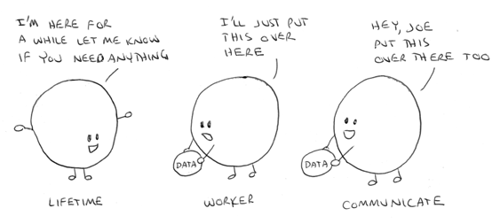

In object oriented programming, an object represents a bundling of data and functions that use the data.
This is simply a description of the structure of an object, but we need to think about objects as much more than this simple bundling. We can think of objects as though they were very little living entities; they have a lifespan, they can do things, and they can communicate with each other.

Some objects may have a very short lifespan and perhaps only exist for the duration of a single page request. Other objects may live much longer and may exist throughout the lifetime of your application.
Objects that have a short lifespan are those that you create on the fly during a page request. You might use it a few times during that page request but it is discarded when the page request finishes. Objects that have a longer lifespan are those you create and store in the session or application scope. These survive for as long as session or as long as the application is running.
In ColdFusion code this is most easily done using the createObject() function. createObject() returns a reference to an object so we can keep it around for a while.
<cfset application.importantObject = createObject("component","ImportantApplicationObject").init()>
Because objects have a lifetime, this also means that they maintain state. The variables inside them can, and typically will, change during their lifetime. A simple example might be an application object that counts the number of visitors on a site. Whenever a new session starts up this counter is increased. When a session ends this counter is decreased.
<!--- Create the counter. ---> <cfset application.sessionCounter = createObject("component","SessionCounter").init()> <!--- Some time later when a session starts up. ---> <cfset application.sessionCounter.newSessionStarted()> <!--- And later when the session ends. ---> <cfset application.sessionCounter.sessionEnded()> <!--- And on another page that reports the number of current sessions. ---> <cfset numSessions = application.sessionCounter.getCurrentNumberOfSessions()> <cfoutput>#numSessions#</cfoutput>
Once you have brought an object to life you need to tell it to do things for you. Objects don't get tired or bored and are there make you happy so they will stick around as long as you need them so you can keep on asking them to do things for you.
This is a fundamental idea to get; objects are there to do work for you. You need to think of them as little workers who only know how to perform very specific tasks and you can ask them to do your bidding. They are much more than a simple bundle of data or a wrapper for some functions.
<cfset worker.doSomething()>
This simply means that one object call another object's functions. When one object calls another object's function it might be to ask the object to do something, or to ask the object for some information.
However, objects can't just communicate with any object anywhere in the system. Objects can only communicate with other objects that it has been "introduced to". This simply means that an object can only communicate with other objects that have been passed via a function call.
<!--- Create a couple of objects ---> <cfset objectA = createObject("component","ObjectA")> <cfset objectB = createObject("component","ObjectB")> <!--- At this point, they don't know anything about each other, so let's introduce them. ---> <cfset objectA.sayHelloTo(objectB)> <!--- This passes a reference of object B into object A, so object A can now call some functions on object B. --->
Take a look at some best practices with components.